(1.) The table provided below shows paired data for the heights of a certain country's presidents and their main opponents
in the election campaign.
(a.) Construct a scatterplot.
(b.) Does there appear to be a correlation between the president's height and his opponent's height?
Yes, there appears to be a correlation. As the president's height increases, his opponent's height decreases.
Yes, there appears to be a correlation. As the president's height increases, his opponent's height increases.
Yes, there appears to be a correlation. The candidate with the highest height usually wins.
No, there does not appear to be a correlation because there is no general pattern to the data.
(1.) Step 1: Open the dataset in Excel
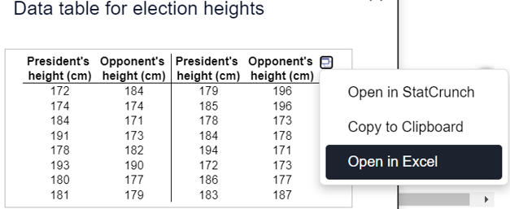
(2.) Step 2: Save as a text file
(a.)
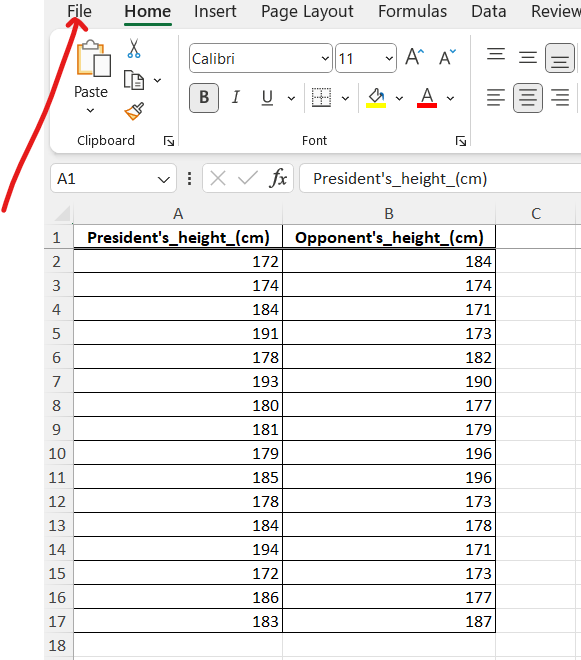
(b.)
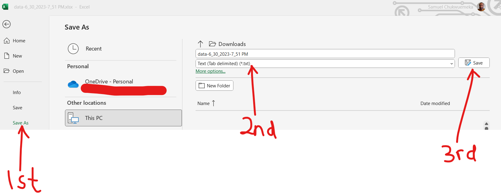
(3.) Step 3: Open the text file in RStudio
(a.)
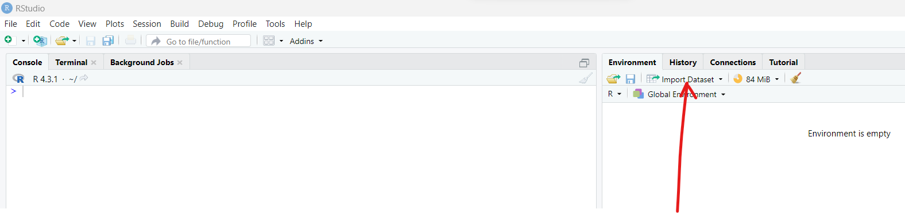
(b.)
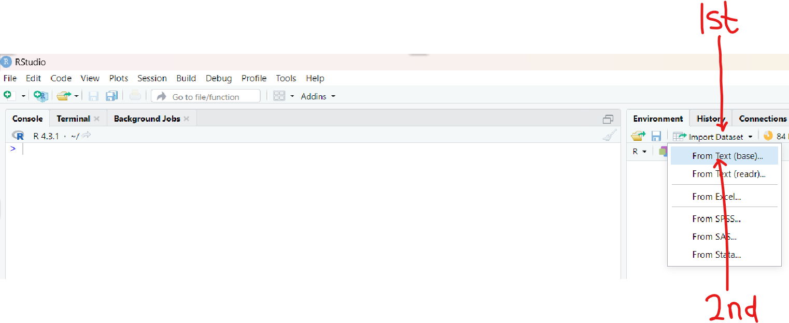
(c.)
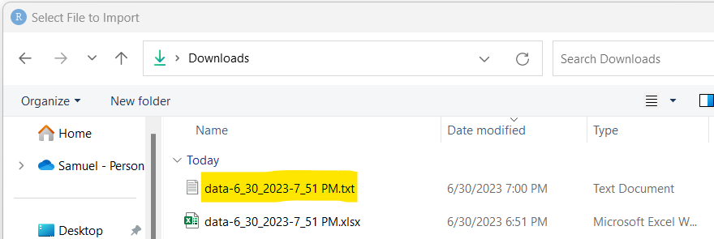
(d.)
(e.)
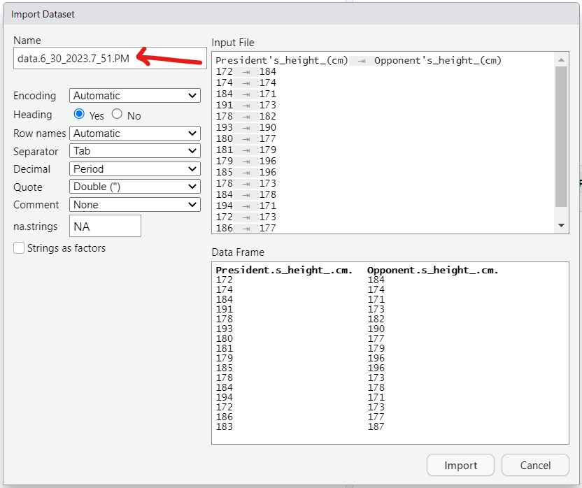
(4.) Step 4: Rename the file with a suitable file name and import it into RStudio
(a.)
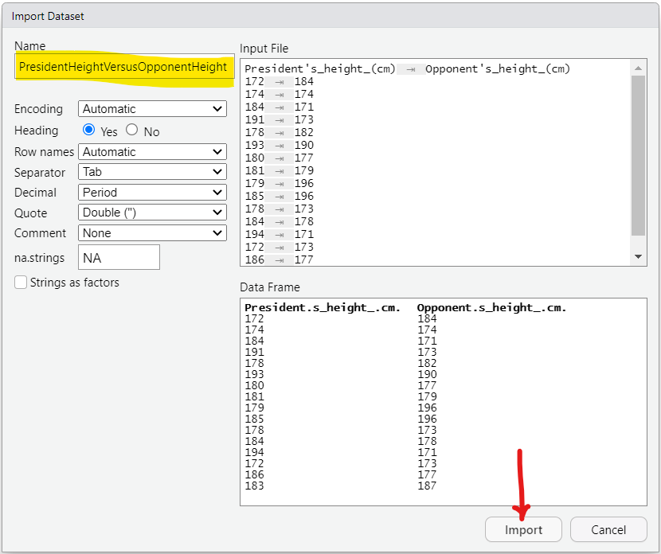
I used the file name:
PresidentHeightVersusOpponentHeight
This is easier because I can connect it with
XaxisVersusYaxis
The
x-axis is the President's Height
The
y-axis is the Opponent's Height
It is highly recommended to use meaningful file names in the context of the data.
(b.)
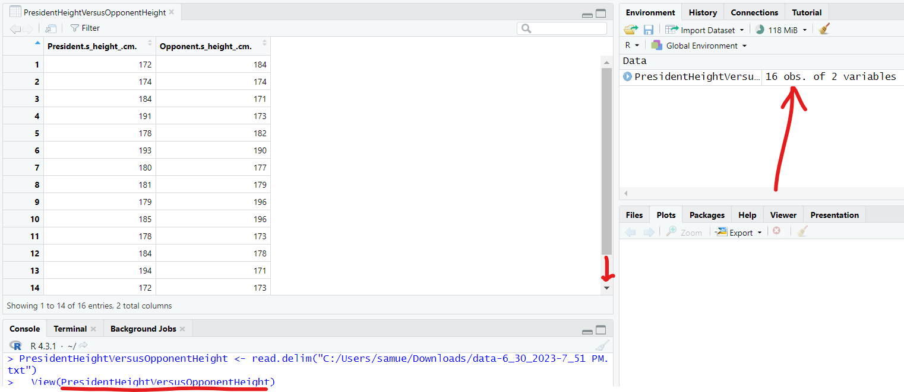
As we can see, there are 16 obs (observations) and 2 variables in the
PresidentHeightVersusOpponentHeight dataset.
(5.)
1st Solution: plot function with only one argument
The function is
plot
The argument is the file name:
PresidentHeightVersusOpponentHeight
By default, RStudio displays first variable (variable in the first column) as the
x-axis and the second variaable (variable in the second column) as the
y-axis.
This is a quick and easy solution
In the console window, type the command:
plot(PresidentHeightVersusOpponentHeight)
(a.)
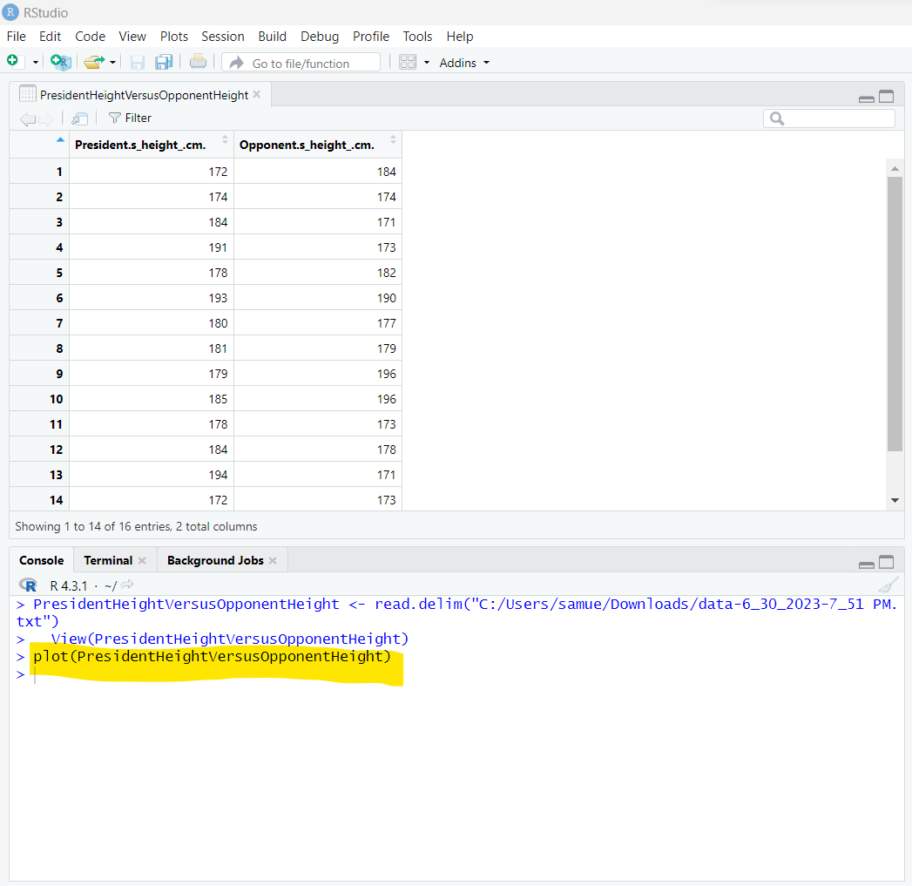
(b.)
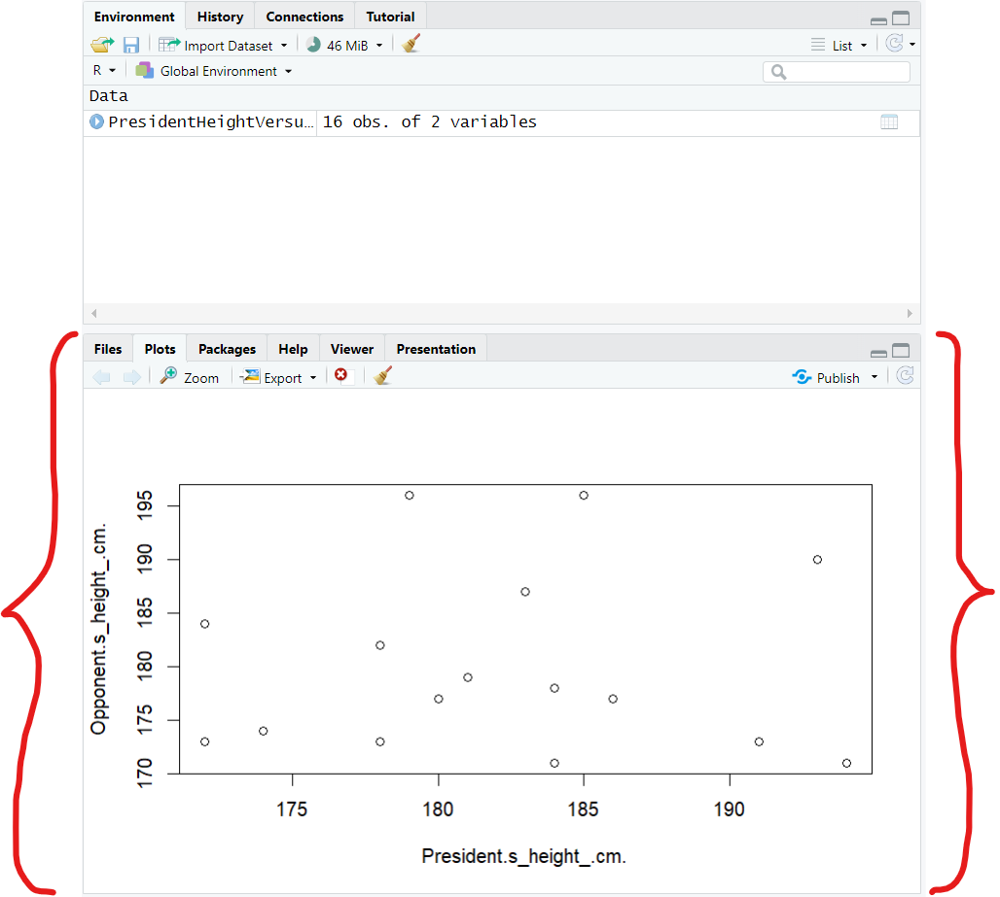
But here's the reason why we need more arguments:
(I.) Some people may be confused whether the correct option is Option
A. or Option
C.
Although after expanding both options and carefully comparing them with the RStudio graph, you may see the correct option.
Be it as it may, we want the graph in RStudio to exactly match the correct one in the option.
The minimum and maximum values used on the graphs in the options are different from the minimum and maximum values on the graph in RStudio
So, it is better we use adjust the one in RStudio to match the one in the options.
We shall use the arguments, each separated by a comma:
xlim = c(160, 200)
ylim = c(160, 200)
where:
xlim is the limit for the
x-axis. This includes the minimum value and the maximum value for the
x-axis
ylim is the limit for the
y-axis. This includes the minimum value and the maximum value for the
y-axis
c is the function that selects and combines the values into a list. It is used when we need to pass a list (in this case: the values in both axis) as a parameter.
(II.) The points on the graph in RStudio are circles (open cirles) while the ones in the options are filled circles (closed circles).
By default, RStudio displays the points as open circles. But we want filled/shaded circles.
To fix this, we shall use the argument:
pch = 16
where:
pch is the Plot Character
pch = 16 is the value of the plot character for filled circle
(III.) The labels on the graph in the options are not exactly the same from the those in the RStudio graph
To label the one in RStudio accordingly, we use the argument:
xlab = "President's height"
ylab = "Opponent's height"
(6.)
2nd Solution: Let us use more arguments (the ones we just listed) with the
plot function
plot(PresidentHeightVersusOpponentHeight, xlab = "President's height", ylab = "Opponent's height", xlim = c(160, 200), ylim = c(160, 200), pch = 16)
(a.)
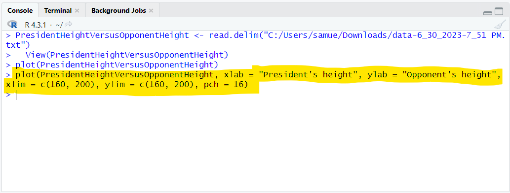
(b.)
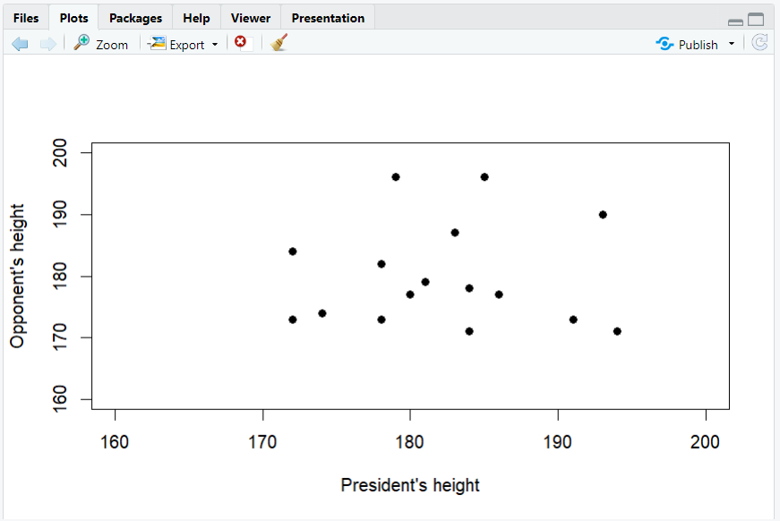
We now see that the correct option is Option
C.
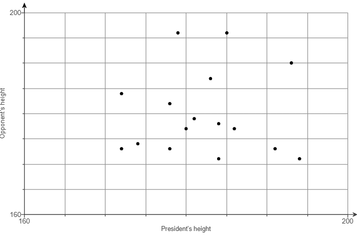
The points are scattered. There is no clear trend.
Hence, there does not appear to be a correlation because there is no general pattern to the data.